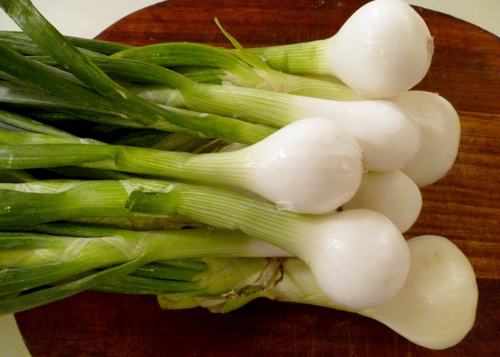

These are the most common onions available in the Burkina, and are seen as the staple product of the onion world. They are versatile and can be used in almost any savoury dish. Brown onions, in general, have quite a strong flavour but this can vary considerably depending on time of year and variety. For most of the year, the onions bought from any good supermarket are sourced from the UK but there are times during June and July when the quality of the stored UK onions are just not good enough and they have to be imported from the Southern Hemisphere.